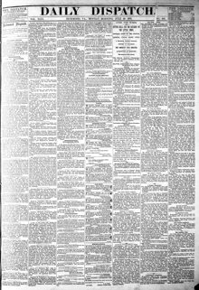

In due course we arrived therg and came to anchor in the portA su debido tiempo llegamos allí y echamos ancla en el puerto
The Daily Dispatch. Richmond [Va.], July 10, 1876. Page 1. Published by J.A. Cowardin, -1884. A daily newspaper, 1850–1884.The Daily Dispatch. Richmond [Va.], 10 de julio de 1876. Página 1. Publicado por J.A. Cowardin, -1884. Periódico diario, 1850–1884. View the originalVer el original


See the full pageVer la página completaAccording to The Daily Dispatch on July 10, 1876, Pablo Villanueva—former Minister of War and Marine under President Gonzales—arrived at St. Domingo City aboard the vessel Tybee with a Dominican passport viséd by Haytien authorities. Upon arrival, Villanueva was warned that he would be arrested if he came ashore, prompting him to seek the assistance of American consul Mr. Paul Jones to help him safely retrieve his wife and child and collect money owed to him without causing political strife. The following day, Dominican forces brought a cannon and troops down to the wharf, pointing the cannon directly at the Tybee.Según The Daily Dispatch del 10 de julio de 1876, Pablo Villanueva —exministro de Guerra y Marina bajo el presidente González— arribó a la ciudad de Santo Domingo en el vapor Tybee con pasaporte dominicano visado por las autoridades haitianas. A su llegada, se le advirtió de que sería apresado si desembarcaba, por lo que impetró la asistencia del cónsul estadounidense Sr. Paul Jones para que le ayudara a recoger con seguridad a su esposa e hijo y cobrar un dinero adeudado sin causar agitación política. Al día siguiente, las tropas dominicanas bajaron un cañón y soldados al muelle, apuntando la pieza de artillería directamente contra el Tybee.
FULL TEXT:TEXTO COMPLETO:
The Daily Dispatch July 10, 187610 de julio de 1876
Our Flag Insulted.Nuestra Bandera Insultada.
THE STEAMSHIP TYBEE BOARDED BY DOMINICAN TROOPS—FORCIBLE REMOVAL OF ONE OF HER PASSENGERS—CONSUL JONES’S PROTEST.EL VAPOR TYBEE ABORDADO POR TROPAS DOMINICANAS—REMOCIÓN FORZOSA DE UNO DE SUS PASAJEROS—PROTESTA DEL CÓNSUL JONES.
NEW YORK, July 8.—On the 20th of June the steamer Tybee arrived at Cape Haytien, in Hayti, where we took on board a passenger named Pablo Villanueva, ex-Minister of War and Marine under President Gonzales, of the Republic of St. Domingo. He was provided with a Dominican passport, duly viséd by the Haytien authorities, and was bound for St. Domingo city, the capital of St. Domingo. In due course we arrived there and came to anchor in the port, where we were boarded by the Captain of the Port and other officials, several of whom spoke and recognized Villanueva. A few hours afterward word was sent to Villanueva from the recently-elected President of the republic that if he should come ashore he would be arrested. Villanueva, feeling safe under the protection, sent for the American consul, Mr. Paul Jones, and told him in English, which he speaks very fluently, that he came to St. Domingo City to see his wife and child, as all the letters he wrote to them had been intercepted, and that he intended to take them away to New York, where he was going to reside for the future. He also said he came to claim some $5,000 due to him from different people, and, in conclusion, that he had no desire to cause any new political strifes, his errand being simply as above stated. After learning this the consul left the Tybee and was rowed ashore.NUEVA YORK, 8 de julio.—El 20 de junio el vapor Tybee llegó a Cabo Haitiano, en Haití, donde tomamos a bordo un pasajero llamado Pablo Villanueva, ex Ministro de Guerra y Marina bajo el presidente Gonzales, de la República de Santo Domingo. Estaba provisto de un pasaporte dominicano, debidamente visado por las autoridades haitianas, y se dirigía a la ciudad de Santo Domingo, la capital de Santo Domingo. A su debido tiempo llegamos allí y anclamos en el puerto, donde fuimos abordados por el Capitán del Puerto y otros funcionarios, varios de los cuales hablaron y reconocieron a Villanueva. Unas pocas horas después se envió palabra a Villanueva del Presidente de la república recientemente elegido de que si bajaba a tierra sería arrestado. Villanueva, sintiéndose seguro bajo la protección, mandó a buscar al cónsul estadounidense, el Sr. Paul Jones, y le dijo en inglés, que habla muy fluentemente, que vino a la ciudad de Santo Domingo a ver a su esposa e hijo, pues todas las cartas que les escribió habían sido interceptadas, y que se proponía llevárselos a Nueva York, donde iba a residir en el futuro. También dijo que vino a reclamar unos $5,000 que le debían diferentes personas, y, en conclusión, que no tenía deseo de causar nuevas contiendas políticas, siendo su diligencia simplemente como se ha afirmado arriba. Después de saber esto el cónsul salió del Tybee y fue remado a tierra.